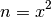
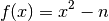
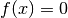
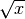
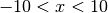
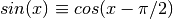
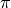
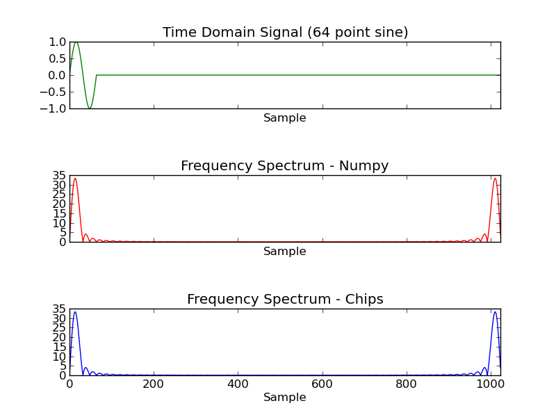

Examples¶
Calculate Square Root using Newton’s Method¶
In this example, we calculate the sqrt of a number using Newton’s method. The problem of finding the square root can be expressed as:

Which can be rearranged as:

Using Newton’s method, we can find numerically the approximate point at which . Repeated applications of the following expression yield increasingly accurate approximations of the Square root:

Turning this into a practical solution, the following code calculates the square root of a floating point number. An initial approximation is refined using Newton’s method until further refinements agree to within a small degree.
/* sqrt.c */
/* Jonathan P Dawson */
/* 2013-12-23 */
#include <stdio.h>
/* approximate sqrt using newton's method*/
double sqrt(double n){
double square, x, old;
x = n;
old = 0.0;
while(old != x){
old = x;
x = (x + n/x)*0.5;
}
return x;
}
/* test sqrt function*/
const int x_in = input("x");
const int sqrt_x_out = output("sqrt_x");
void main(){
double x;
while(1){
x = fget_float(x_in);
fput_float(sqrt(x), sqrt_x_out);
}
}
Note that the code isn’t entirely robust, and cannot handle special cases such as Nans, infinities or negative numbers. A simple test calculates  where .

Approximating Sine and Cosine functions using Taylor Series¶
In this example, we calculate an approximation of the cosine functions using the Taylor series:

The following example uses the Taylor Series approximation to generate the Sine and Cosine functions. Successive terms of the taylor series are calculated until successive approximations agree to within a small degree. A Sine function is also synthesised using the identity 
/* taylor.c */
/* Jonathan P Dawson */
/* 2013-12-23 */
#include <stdio.h>
/* globals */
double pi=3.14159265359;
/* approximate the cosine function using Taylor series */
double taylor(double angle){
double old, approximation, sign, power, fact;
unsigned count, i;
approximation = angle;
old = 0.0;
sign = -1.0;
count = 1;
power = 1.0;
fact = 1.0;
for(i=3; approximation!=old; i+=2){
old = approximation;
while(count<=i){
power*=angle;
fact*=count;
count++;
}
approximation += sign*(power/fact);
sign = -sign;
}
return approximation;
}
/* return the sine of angle in radians */
double sin(double angle){
return taylor(angle);
}
/* return the cosine of angle in radians */
double cos(double angle){
return sin(angle+(pi/2));
}
/* test routine */
const int x_in = input("x");
const int sin_x_out = output("sin_x");
const int cos_x_out = output("cos_x");
void main(){
double x;
while(1){
x = fget_double(x_in);
fput_double(sin(x), sin_x_out);
fput_double(cos(x), cos_x_out);
}
}
A simple test calculates Sine and Cosine for the range  .
.
Implement Quicksort¶
This example sorts an array of data using the Quick Sort algorithm
The quick-sort algorithm is a recursive algorithm, but Chips does not support recursive functions. Since the level of recursion is bounded, it is possible to implement the function using an explicitly created stack.
/* sort.c */
/* Jonathan P Dawson */
/* 2013-12-23 */
/* Based on the in-place algorithm on the Wikipedia page */
/* http://en.wikipedia.org/wiki/Quicksort#In-place_version */
/*globals*/
const unsigned length = 32;
/* partition subarray */
unsigned partition(
int array[],
unsigned left,
unsigned right,
unsigned pivot_index)
{
int temp, pivot_value;
unsigned i, store_index;
store_index = left;
pivot_value = array[pivot_index];
temp = array[pivot_index];
array[pivot_index] = array[right];
array[right] = temp;
for(i=left; i<right; i++){
if(array[i] <= pivot_value){
temp = array[store_index];
array[store_index] = array[i];
array[i] = temp;
store_index++;
}
}
temp = array[store_index];
array[store_index] = array[right];
array[right] = temp;
return store_index;
}
/* recursive sort */
void quick_sort(int array[], unsigned left, unsigned right){
unsigned pivot;
/* if the subarray has two or more elements */
if (left < right){
/* partition sub array into two further sub arrays */
pivot = (left + right) >> 1;
pivot = partition(array, left, right, pivot);
/* push both subarrays onto stack */
quick_sort(array, left, pivot-1);
quick_sort(array, pivot+1, right);
}
}
void main(){
int array[length];
unsigned i;
/* Fill array with zeros */
for(i=0; i<length; i++){
array[i] = 0;
}
/* Add unsorted data to the array */
array[0] = 16;
array[1] = 15;
array[2] = 14;
array[3] = 13;
array[4] = 12;
array[5] = 11;
array[6] = 10;
array[7] = 9;
array[8] = 8;
array[9] = 7;
array[10] = 6;
array[11] = 5;
array[12] = 4;
array[13] = 3;
array[14] = 2;
array[15] = 1;
/* Sort the array */
quick_sort(array, 0, length-1);
for(i=0; i<length; i++){
report(array[i]);
}
}
The algorithm is tested using an array containing out of order values. The program correctly sorts the array:
0 (report at line: 96 in file: sort.c)
0 (report at line: 96 in file: sort.c)
0 (report at line: 96 in file: sort.c)
0 (report at line: 96 in file: sort.c)
0 (report at line: 96 in file: sort.c)
0 (report at line: 96 in file: sort.c)
0 (report at line: 96 in file: sort.c)
0 (report at line: 96 in file: sort.c)
0 (report at line: 96 in file: sort.c)
0 (report at line: 96 in file: sort.c)
0 (report at line: 96 in file: sort.c)
0 (report at line: 96 in file: sort.c)
0 (report at line: 96 in file: sort.c)
0 (report at line: 96 in file: sort.c)
0 (report at line: 96 in file: sort.c)
0 (report at line: 96 in file: sort.c)
1 (report at line: 96 in file: sort.c)
2 (report at line: 96 in file: sort.c)
3 (report at line: 96 in file: sort.c)
4 (report at line: 96 in file: sort.c)
5 (report at line: 96 in file: sort.c)
6 (report at line: 96 in file: sort.c)
7 (report at line: 96 in file: sort.c)
8 (report at line: 96 in file: sort.c)
9 (report at line: 96 in file: sort.c)
10 (report at line: 96 in file: sort.c)
11 (report at line: 96 in file: sort.c)
12 (report at line: 96 in file: sort.c)
13 (report at line: 96 in file: sort.c)
14 (report at line: 96 in file: sort.c)
15 (report at line: 96 in file: sort.c)
16 (report at line: 96 in file: sort.c)
Pseudo Random Number Generator¶
This example uses a Linear Congruential Generator (LCG) to generate Pseudo Random Numbers.
/*globals*/
unsigned long int seed;
void srand(unsigned int s){
seed = s;
}
unsigned long rand(){
const unsigned a = 1103515245u;
const unsigned c = 12345u;
seed = (a*seed+c);
return seed;
}
void main(){
unsigned i;
for (i=0; i<4096; i++){
file_write(rand(), "x");
file_write(rand(), "y");
file_write(rand(), "z");
}
}
Fast Fourier Transform¶
This example builds on the Taylor series example. We assume that the sin and cos routines have been placed into a library of math functions math.h, along with the definitions of , M_PI.
The Fast Fourier Transform (FFT) is an efficient method of decomposing discretely sampled signals into a frequency spectrum, it is one of the most important algorithms in Digital Signal Processing (DSP). The Scientist and Engineer’s Guide to Digital Signal Processing gives a straight forward introduction, and can be viewed on-line for free.
The example shows a practical method of calculating the FFT using the Cooley-Tukey algorithm.
/* fft.c */
/* Jonathan P Dawson */
/* 2013-12-23 */
#include <math.h>
#include <stdio.h>
/*globals*/
const int n = 1024;
const int m = 10;
double twiddle_step_real[m];
double twiddle_step_imaginary[m];
/*calculate twiddle factors and store them*/
void calculate_twiddles(){
unsigned stage, span;
for(stage=0; stage<m; stage++){
span = 1 << stage;
twiddle_step_real[stage] = cos(M_PI/span);
twiddle_step_imaginary[stage] = -sin(M_PI/span);
}
}
/*bit reverse*/
unsigned bit_reverse(unsigned forward){
unsigned reversed=0;
unsigned i;
for(i=0; i<m; i++){
reversed <<= 1;
reversed |= forward & 1;
forward >>= 1;
}
return reversed;
}
/*calculate fft*/
void fft(double reals[], double imaginaries[]){
int stage, subdft_size, span, i, ip, j;
double sr, si, temp_real, temp_imaginary, imaginary_twiddle, real_twiddle;
//read data into array
for(i=0; i<n; i++){
ip = bit_reverse(i);
if(i < ip){
temp_real = reals[i];
temp_imaginary = imaginaries[i];
reals[i] = reals[ip];
imaginaries[i] = imaginaries[ip];
reals[ip] = temp_real;
imaginaries[ip] = temp_imaginary;
}
}
//butterfly multiplies
for(stage=0; stage<m; stage++){
subdft_size = 2 << stage;
span = subdft_size >> 1;
//initialize trigonometric recurrence
real_twiddle=1.0;
imaginary_twiddle=0.0;
sr = twiddle_step_real[stage];
si = twiddle_step_imaginary[stage];
report(stage);
for(j=0; j<span; j++){
for(i=j; i<n; i+=subdft_size){
ip=i+span;
temp_real = reals[ip]*real_twiddle - imaginaries[ip]*imaginary_twiddle;
temp_imaginary = reals[ip]*imaginary_twiddle + imaginaries[ip]*real_twiddle;
reals[ip] = reals[i]-temp_real;
imaginaries[ip] = imaginaries[i]-temp_imaginary;
reals[i] = reals[i]+temp_real;
imaginaries[i] = imaginaries[i]+temp_imaginary;
}
//trigonometric recurrence
temp_real=real_twiddle;
real_twiddle = temp_real*sr - imaginary_twiddle*si;
imaginary_twiddle = temp_real*si + imaginary_twiddle*sr;
}
}
}
const int x_re_in = input("x_re");
const int x_im_in = input("x_im");
const int fft_x_re_out = output("fft_x_re");
const int fft_x_im_out = output("fft_x_im");
void main(){
unsigned i;
double reals[n];
double imaginaries[n];
/* pre-calculate sine and cosine*/
calculate_twiddles();
while(1){
/* read time domain signal */
for(i=0; i<n; i++){
reals[i] = fget_double(x_re_in);
imaginaries[i] = fget_double(x_im_in);
}
/* transform into frequency domain */
fft(reals, imaginaries);
/* output frequency domain signal*/
for(i=0; i<n; i++){
fput_double(reals[i], fft_x_re_out);
fput_double(imaginaries[i], fft_x_im_out);
}
}
}
The C code includes a simple test routine that calculates the frequency spectrum of a 64 point sine wave.
FIR Filter¶
An FIR filter contains a tapped delay line. By applying a weighting to each tap, and summing the results we can create a filter. The coefficients of the filter are critical. Here we create the coefficients using the firwin function from the SciPy package. In this example we create a low pass filter using a Blackman window. The Blackman window gives good attenuation in the stop band.
from math import pi
from numpy import abs
from scipy import fft
from scipy.signal import firwin
from matplotlib import pyplot
from chips.api.api import Chip, Stimulus, Response, Wire, Component
#create a chip
chip = Chip("filter_example")
#low pass filter half nyquist 50 tap
kernel = Stimulus(chip, "kernel", "float", firwin(50, 0.5, window="blackman"))
#impulse response
input_ = Stimulus(chip, "input", "float", [1.0] + [0.0 for i in range(1024)])
output = Response(chip, "output", "float")
#create a filter component using the C code
fir_comp = Component("fir.c")
#add an instance to the chip
fir_inst_1 = fir_comp(
chip,
inputs = {
"a":input_,
"k":kernel,
},
outputs = {
"z":output,
},
parameters = {
"N":len(kernel)-1,
},
)
#run the simulation
chip.simulation_reset()
while len(output) < 1024:
chip.simulation_step()
#plot the result
pyplot.semilogy(abs(fft(list(output)))[0:len(output)/2])
pyplot.title("Magnitude of Impulse Response")
pyplot.xlim(0, 512)
pyplot.xlabel("X Sample")
pyplot.savefig("../docs/source/examples/images/example_6.png")
pyplot.show()
The C code includes a simple test routine that calculates the frequency spectrum of a 64 point sine wave.
/* Chips-2.0 FIR Filter Example */
/* Jonathan P Dawson 2014-07-05 */
#include <stdio.h>
unsigned in = input("a");
unsigned out = output("z");
unsigned kernel_in = input("k");
void main(){
unsigned i = 0;
unsigned inp = 0;
float delay[N];
float kernel[N];
float data_out;
/* read in filter kernel */
for(i=0; i<N; i++){
kernel[i] = fget_float(kernel_in);
}
/* execute filter on input stream */
while(1){
delay[inp] = fget_float(in);
data_out=0.0; i=0;
while(1){
data_out += delay[inp] * kernel[i];
if(i == N-1) break;
i++;
if(inp == N-1){
inp=0;
}else{
inp++;
}
}
fput_float(data_out, out);
}
}
Increasing the length of the filter kernel results in a faster roll-off and greater attenuation.

While in this example, we calculate all the coefficients inside a single process, it is possible to generate a pipelined implementation, and allow the work to be carried out by multiple processes resulting in an increase in the throughput rate.
The Scientist and Engineer’s Guide to Digital Signal Processing gives a straight forward introduction, and can be viewed on-line for free.
FM Modulation¶
It is often useful in digital hardware to simulate a sin wave numerically. It is possible to implements a sinusoidal oscillator, without having to calculate the value of the sinusoid for each sample. A typical approach to this in hardware is to store within a lookup table a series of values, and to sweep through those values at a programmable rate. This method relies on a large amount of memory, and the memory requirements increase rapidly for high resolutions. It is possible to improve the resolution using techniques such as interpolation.
In this example however, an alternative method is employed, trigonometric recurrence allows us to calculate the sin and cosine of a small angle just once. From there, subsequent samples can be found using multipliers.
#include <stdio.h>
#include <math.h>
unsigned frequency_in = input("frequency");
unsigned sin_out = output("sin");
unsigned cos_out = output("cos");
void main(){
float sin_x, cos_x, new_sin, new_cos, si, sr, frequency;
int i;
cos_x = 1.0;
sin_x = 0.0;
sr = cos(2.0 * M_PI/N);
si = sin(2.0 * M_PI/N);
while(1){
frequency = fget_float(frequency_in);
for(i=0; i<frequency; i++){
new_cos = cos_x*sr - sin_x*si;
new_sin = cos_x*si + sin_x*sr;
cos_x = new_cos;
sin_x = new_sin;
}
fput_float(cos_x, sin_out);
fput_float(sin_x, cos_out);
}
}
Conveniently, using this method, both a sin and cosine wave are generated. This is useful in complex mixers which require a coherent sin and cosine wave. We can control the frequency of the generated wave by stepping through the waveform more quickly. If the step rate is received from an input, this can be used to achieve frequency modulation.

Edge Detection¶
This simple example shows how a simple 3x3 convolution matrix can be used to perform an edge detect operation on a grey-scale image. The convolution matrix is the “quick mask” matrix presented in Image Processing in C which also gives a straight forward introduction to edge detection algorithms.
The Python Imaging Library allows real images to be used in the simulation.
/*Edge Detection*/
/*Jonathan P Dawson 2014-07-06*/
void set_xy(int image[], int x, int y, int pixel){
if(x<0) return;
if(x>=WIDTH) return;
image[x+y*WIDTH] = pixel;
}
int get_xy(int image[], int x, int y){
if(x<0) return 0;
if(x>=WIDTH) return 0;
return image[x+y*WIDTH];
}
void main()
{
unsigned image_in = input("image_in");
unsigned image_out = output("image_out");
unsigned image[SIZE];
unsigned new_image[SIZE];
int x, y, pixel;
while(1){
/* read in image */
for(y=0; y<HEIGHT; y++){
for(x=0; x<WIDTH; x++){
set_xy(image, x, y, fgetc(image_in));
}
report(y);
}
/* apply edge detect */
for(y=0; y<HEIGHT; y++){
for(x=0; x<WIDTH; x++){
pixel = get_xy(image, x, y ) << 2;
pixel -= get_xy(image, x-1, y+1);
pixel -= get_xy(image, x+1, y-1);
pixel -= get_xy(image, x-1, y-1);
pixel -= get_xy(image, x+1, y+1);
set_xy(new_image, x, y, pixel);
}
report(y);
}
/* write out image */
for(y=0; y<HEIGHT; y++){
for(x=0; x<WIDTH; x++){
fputc(get_xy(new_image, x, y), image_out);
}
report(y);
}
}
}

LZSS Compression¶
LZSS is a simple form of of run length compression that exploits repeated sequences in a block of data. The encoder scans a block of data, and sends literal characters. However if the encoder encounters a sequence of characters that have already been sent, it will substitute the sequence with a reference to the earlier data. The encoder will always select the longest matching sequence that it has already sent. To achieve this the encoder needs to store a number of previously sent characters in a buffer. This buffer is referred to as the window.
/*LZSS Compression Component*/
/*Jonathan P Dawson 2014-07.10*/
unsigned raw_in = input("raw_in");
unsigned compressed_out = output("compressed_out");
/*Send data of an arbitrary bit length*/
unsigned packed, stored = 0;
void send_bits(unsigned data, unsigned bits){
unsigned i;
for(i=0; i<bits; i++){
packed >>= 1;
packed |= (data & 1) << 31;
data >>= 1;
stored++;
if(stored == 32){
fputc(packed, compressed_out);
stored = 0;
}
}
}
/*A function that reads a stream of uncompressed data,
and creates a stream of compressed data*/
void main(){
unsigned pointer, match, match_length, longest_match, longest_match_length;
unsigned buffer[N];
unsigned new_size;
while(1){
for(pointer=0; pointer<N; pointer++){
buffer[pointer] = fgetc(raw_in);
}
pointer=0;
new_size = 0;
while(pointer<N){
/*Find the longest matching string already sent*/
longest_match = 0;
longest_match_length = 0;
for(match=0; match<pointer; match++){
/*match length of 0 indicates no match*/
match_length = 0;
/*search through buffer to find a match*/
while(buffer[match+match_length] == buffer[pointer+match_length]){
match_length++;
}
/*If this is the longest match, remember it*/
if(match_length > longest_match_length){
longest_match = match;
longest_match_length = match_length;
}
}
/*send data*/
if(longest_match_length >= 3){
send_bits(0, 1);
send_bits(longest_match_length, LOG2N);
send_bits(pointer - longest_match, LOG2N);
pointer += longest_match_length;
new_size += LOG2N + LOG2N + 1;
}
else{
send_bits(1, 1);
send_bits(buffer[pointer], 8);
pointer++;
new_size += 9;
}
report(pointer);
}
/*report the compression ratio of this block in simulation*/
report(new_size / (8.0*N));
}
}
The encoding is simple. A bit is sent to indicate whether a raw character or a reference continues. A reference consists of a distance length pair. The distance tells the decoder how many characters ago the matching sequence was sent, and the distance indicates the length of the matching sequence. The size of the distance and length pointers will depend on the size of the window, for example a window size of 1024 requires the pointers to be 10 bits each.
/*LZSS Decmpression Component*/
/*Jonathan P Dawson 2014-07-10*/
unsigned raw_out = output("raw_out");
unsigned compressed_in = input("compressed_in");
/*A function to get data of an arbitrary bit length*/
unsigned stored = 0;
unsigned packed;
unsigned get_bits(unsigned bits){
unsigned i, value = 0;
for(i=0; i<bits; i++){
if(!stored){
stored = 32;
packed = fgetc(compressed_in);
}
value >>= 1;
value |= (packed & 1) << 31;
packed >>= 1;
stored--;
}
return value >> (32 - bits);
}
/*Decompress a stream of lzss compressed data,
and generate a stream of raw data*/
void main(){
unsigned i, pointer, distance, length, data;
unsigned buffer[N];
while(1){
/*get distance length*/
if(get_bits(1)){
data = get_bits(8);
buffer[pointer] = data;
pointer++;
fputc(data, raw_out);
}
else{
length = get_bits(LOG2N);
distance = get_bits(LOG2N);
for(i=0; i<length; i++){
data = buffer[pointer-distance];
buffer[pointer] = data;
pointer++;
fputc(data, raw_out);
}
}
}
}
In the simulation, a short passage of text is compressed by the encoder component, sent to the decoder component, decompressed and recovered. A fuller explanation may be found on wikipedia.